AI Academy · Level 1 · Grade 6 · Week 16 · Student lesson
Boundaries and 'Not Sure'
Learn to understand, design, build, test and explain AI systems responsibly.
Project: Helpful Classroom Sorter
Before you start
Week 7: category definitions may leave boundary cases.
Plan time to read, investigate and explain. Keep predictions separate from observations.
Student lesson · 1 of 18
Your mission
Start with the target: Identify a specific source of uncertainty and explain how it affects a prediction. Try the recall before opening notes.
Your learning target
I can identify a specific source of uncertainty and explain how it affects a prediction.
I can compare predictions across stated possible inputs without inventing a missing value.
I can design a review step with relevant evidence and an explicit unresolved outcome.
Remember before reading
Close your notes first. A rough first answer helps us choose the right starting point; it is not a score for your ability.
Without opening the old lesson, explain one key idea from Save New Examples for Testing. Give an example and a mistake that the idea helps you avoid.
Without opening the old lesson, explain one key idea from Learning from Examples. Give an example and a mistake that the idea helps you avoid.
Without opening the old lesson, explain one key idea from If/Then Decisions. Give an example and a mistake that the idea helps you avoid.
After trying, check the relevant lesson or ask your teacher. Change the part of your explanation that the evidence shows was wrong.
Overlapping categories create uncertainty; abstaining can be responsible.
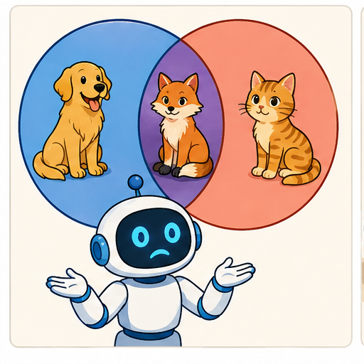
Your target
LEARNING TARGET A sorter receives a clear purple card, a red card hidden by a sleeve and a card labelled both red and blue by two reviewers. Give a different reason for uncertainty in each case and a suitable next action.
Learner name:
Readiness for the connected explanation
A model predicts tall at a height of at least 6 cm. What would it predict if an unclear record could mean either 5 or 6 cm? Does a good result on a small final test settle this particular input?
This week’s end goal
By the end, I can use uncertainty to request a specific review when possible inputs lead to different decisions.
Student lesson · 2 of 18
Notice the evidence
Investigate the supplied Boundaries and 'Not Sure' case. Separate observations, given facts and assumptions before choosing an explanation.
PICTURE STORY
Look Closely Before You Explain
Pictures give clues; evidence tells us what the clues mean.
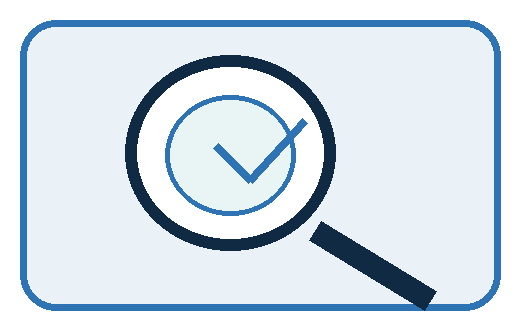
Start with this puzzle
MYSTERY A soft toy shaped like a ball may fit toy, sports, or comfort-item bins depending on the sorter's purpose.
What do you notice?
Name three visible details without explaining them yet.
Circle the detail most connected to the system's decision.
Name one detail that may be decoration or distraction.
Make a first prediction and state the clue that supports it.
My observations, prediction, and evidence:
Thinking habit
GOOD THINKING A prediction can change when stronger evidence appears.
A closer explanation
An unclear measurement, a missing feature and a weakly tested model create different problems. Saying the AI is unsure does not identify which one matters.
Write what is known, what remains unknown and how the unknown could change the result. Then choose a check that addresses that specific gap.
Use the familiar tower model: tall at a height of at least 6 cm, short otherwise, for whole-number heights from 1 through 10. A smudged card could read 5 cm or 6 cm. The threshold is known; the input is unclear.
Repeating the same calculation cannot recover the missing digit.
For this paper investigation, treat the listed possibilities as the complete set allowed by the exercise. In real use, that assumption would itself need evidence.
We will compare the model’s predictions under each possibility; we are not changing Tower1 to accept an invented exact measurement.
Student lesson · 3 of 18
See how it works
Follow the mechanism for Boundaries and 'Not Sure'. Connect each labelled input, deciding step and result.
VISUAL MECHANISM
Input → Process → Output
Follow the information instead of imagining magic inside the machine.
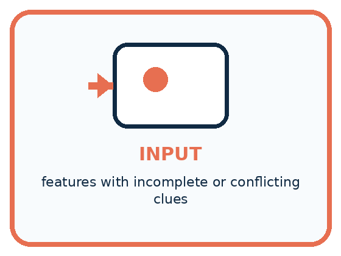
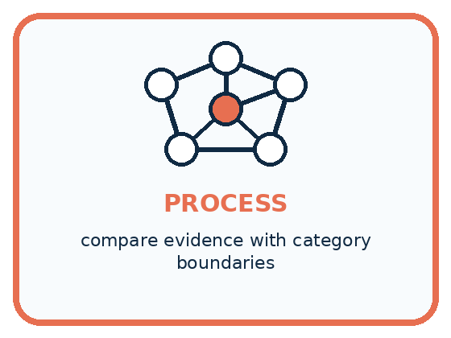
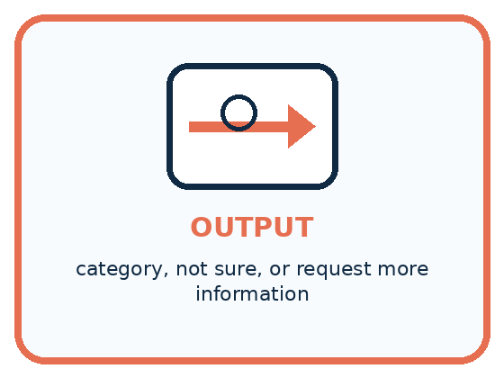
INPUT features with incomplete or conflicting clues
PROCESS compare evidence with category boundaries
OUTPUT category, not sure, or request more information
Key idea
CORE IDEA Overlapping categories create uncertainty; abstaining can be responsible.
How the mechanism works
UNDER THE HOOD Abstention is a decision policy: when confidence or evidence fails a threshold, the system defers.
Good thresholds balance coverage against error cost and specify what additional information or human review follows.
Draw a fresh example with all three stages:
A closer explanation
Possible heights can change the prediction
At either 5 or 6 cm, one possibility predicts short and the other tall. Record no single category yet and ask for the original record or a new measurement. Do not select the more convenient digit.
Averaging the two readings would introduce a different input that neither possibility stated.
At either 8 or 9 cm, the model predicts tall in both cases. You can state that the prediction stays tall under these two possibilities. Keep the exact-height uncertainty visible.
This agreement does not check the model against a correct task label or establish that the list of possible heights is complete.
Connect the picture and the explanation
Point to the input, the deciding step and the result in this week’s visual. Explain the same step in ordinary words. A picture helps when you can say what each part represents.
Student lesson · 4 of 18
Compare the cases
Compare the supplied cases for Boundaries and 'Not Sure'. Identify the detail that changes the conclusion.
PICTURE GALLERY
Four Cases, Four Clues
Use the visual cue, then read the evidence carefully.
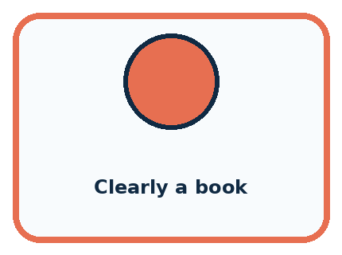
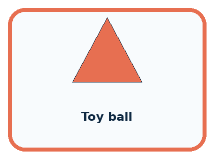
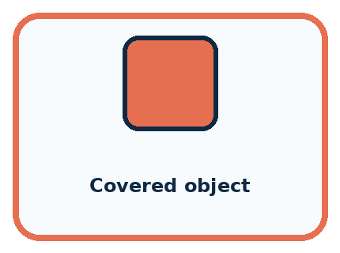
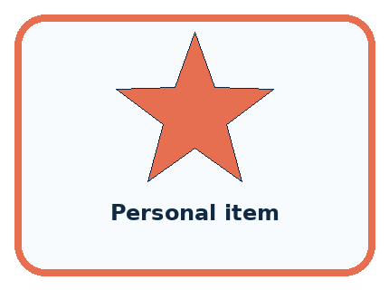
The case to investigate
CASE 1 — Clearly a book Clue: strong single-category evidence. Meaning: classify.
The case to investigate
CASE 2 — Toy ball Clue: toy and sports overlap. Meaning: review purpose.
The case to investigate
CASE 3 — Covered object Clue: important features hidden. Meaning: need more info.
The case to investigate
CASE 4 — Personal item Clue: high consequence if wrong. Meaning: adult review.
Keep this boundary clear
BOUNDARY Responsible uncertainty is informative and actionable, not a blank refusal.
Which two pictures are easiest to confuse? What evidence separates them?
Change one thing in the pictured case
Change one thing
Change: Narrow B’s possibilities to 6 or 7 cm.
Predicted result
Prediction: Both fail the width limit; rejection no longer depends on resolving their difference.
Why the result follows
Reason: All remaining possibilities lead to the same decision.
Student lesson · 5 of 18
Words that unlock the idea
Use the vocabulary of Boundaries and 'Not Sure' to explain a concrete decision, rather than only memorising definitions.
VOCABULARY
Words You Can See and Use
The badge is a memory cue; the definition does the real thinking work.
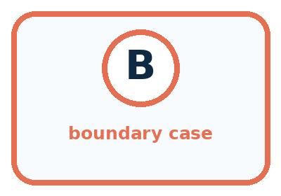
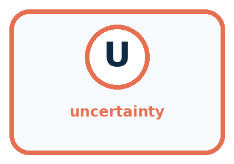
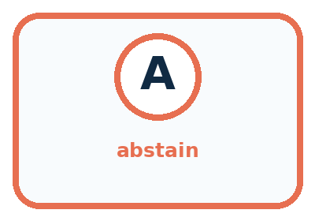
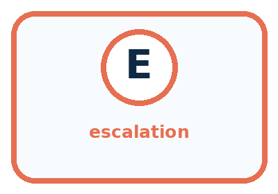
| Word | Meaning | My example |
|---|---|---|
| boundary case | example near competing category rules | |
| uncertainty | limited support for one conclusion | |
| abstain | decline to choose a category | |
| escalation | send the case for added information or review |
Misconception detective
Find the unsupported claim
CLAIM TO REPAIR A good system must always choose one label.
Use one vocabulary word and one piece of evidence to repair it:
WORD POWER A strong definition helps you decide something in a new case.
Words used in the closer explanation
| Word | Meaning |
|---|---|
| Possible input | An input still compatible with the stated information |
| Review trigger | A stated condition that sends a case for an additional check |
| Review evidence | Information gathered to investigate the reason a case was referred |
| Unresolved | Still not settled after the available checks |
Student lesson · 6 of 18
Follow a worked example
Follow the worked trace for Boundaries and 'Not Sure', predict a step, then compare with its explanation.
WORKED EXAMPLE
Watch the Reasoning, Not Just the Answer
Every step connects a claim to observable evidence.
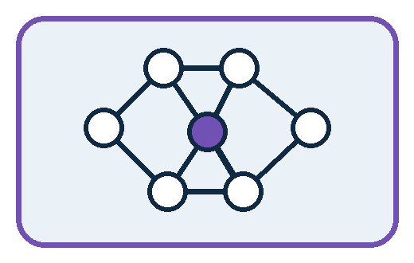
The case to investigate
CASE A soft toy shaped like a ball may fit toy, sports, or comfort-item bins depending on the sorter's purpose.
Step 1
STEP 1 — OBSERVE features with incomplete or conflicting clues
Step 2
STEP 2 — TRACE compare evidence with category boundaries
Step 3
STEP 3 — CONCLUDE category, not sure, or request more information
Model answer
MODEL REASONING A useful not-sure result is specific: it states which categories compete, what evidence is missing, and who or what should supply it.
Abstention reduces forced errors but should not become an excuse to avoid all decisions.
A claim to avoid
DO NOT OVERCLAIM Responsible uncertainty is informative and actionable, not a blank refusal.
What new evidence could change this answer?
A closer explanation
| Reason for review | Relevant check | What it cannot settle alone |
|---|---|---|
| Smudged height | Read the original or remeasure | Whether the model is accurate |
| Unit missing | Check how the record was made | The unit from digits alone |
| Two labels for one record | Check the label policy and sources | Truth by majority vote |
| Poorly tested new use | Evaluate relevant reserved cases | Every future outcome |
Worked explanation · Boundaries and 'Not Sure'
A review request should carry the original input, model version, unresolved issue and any predictions already made. Name the evidence to seek and the person responsible for checking it.
A reviewer needs access to relevant evidence and a clear task; being human does not make an unsupported guess correct.
Worked explanation · Boundaries and 'Not Sure'
After review, record what was checked and what changed. If a reliable new reading establishes 6 cm, the model predicts tall. If the record is still unreadable, keep no prediction with reason unresolved height.
Do not replace the original record without retaining the reason for the correction.
Learn from the worked case
Cover the result before checking it. Say what is given, choose the procedure, and follow one step at a time. Then uncover the result and explain your first mismatch. Ask why a step is allowed, not only what number it produces.
A pictorial worked case: Boundaries and 'Not Sure'
A fictional cubby selector accepts a block if width is at most 5 cm.
The facts we will use
Supplied facts
An unclear measurement means Block A is either 4 or 5 cm; Block B is either 5 or 6 cm.
Supplied facts
These complete possibility sets contain all widths under consideration. Other dimensions are known to fit.
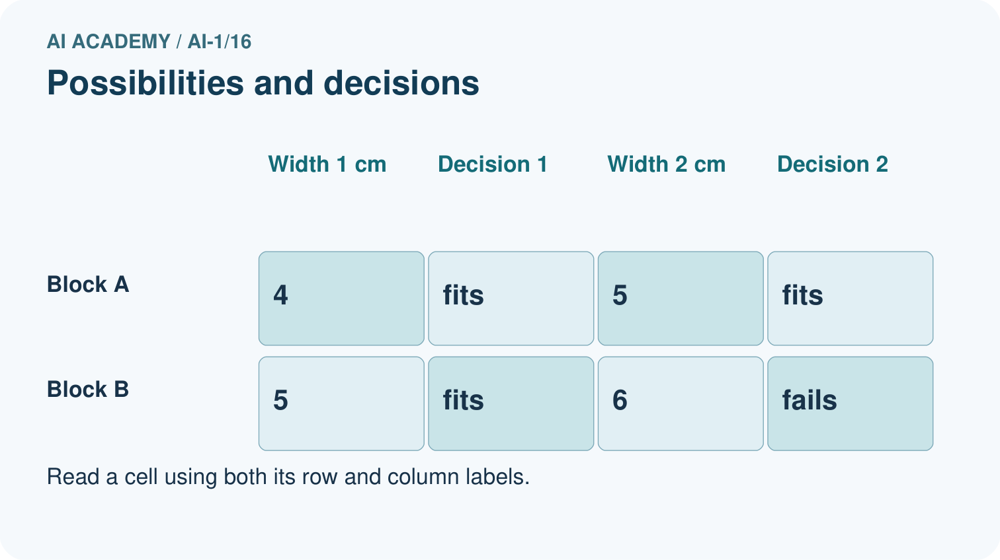
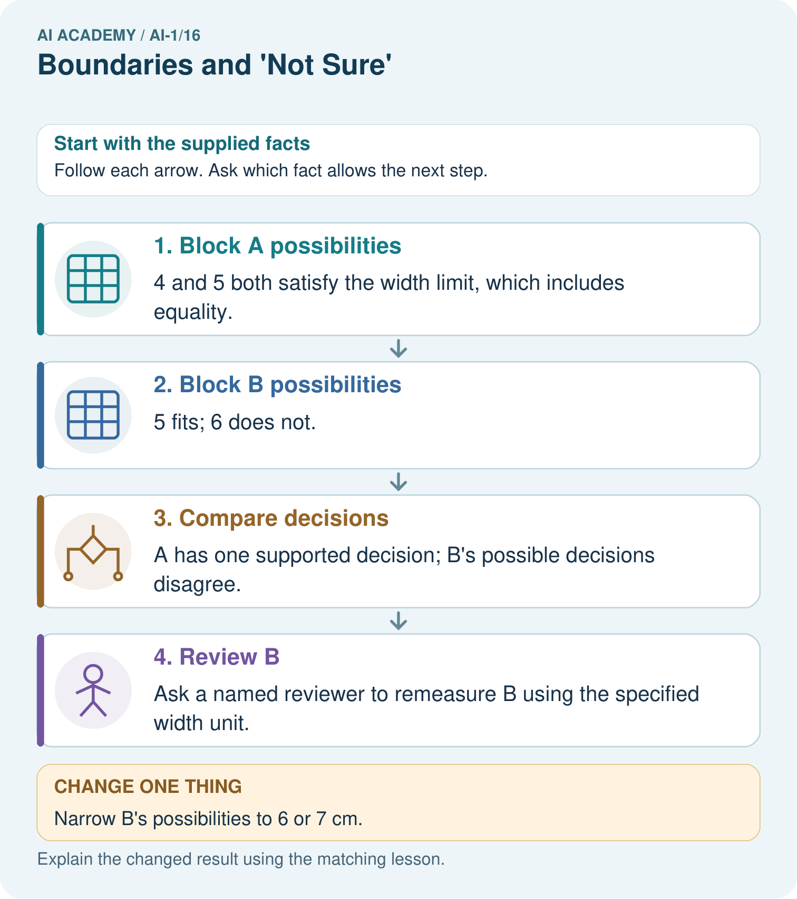
Read the picture one step at a time
Why this result follows
Why the result follows
Uncertainty about a number need not always create uncertainty about the decision. Every allowed width for A fits, so its width uncertainty does not affect acceptance. B straddles the boundary.
Record both possibilities and request a better measurement instead of selecting the one that makes a preferred outcome.
What this example does not establish
Keep the stated limit
A review path is not automatically accurate; its conclusion depends on relevant, better evidence.
Keep the stated limit
Read the labelled picture: Which original block needs a better width before accepting or rejecting it? What should the reviewer do?
Keep the stated limit
Change one thing: Narrow B’s possibilities to 6 or 7 cm. Predict the result before checking the explanation. What remains the same?
Student lesson · 7 of 18
Find and repair a mistake
Find the unsupported step in the Boundaries and 'Not Sure' claim and explain a repair using the supplied evidence.
COMPARE
Same Result, Different Reason
A comparison helps reveal the true concept boundary.
| Case | Evidence | What it shows |
|---|---|---|
| Clearly a book | strong single-category evidence | classify |
| Toy ball | toy and sports overlap | review purpose |
| Covered object | important features hidden | need more info |
| Personal item | high consequence if wrong | adult review |
Repair two tempting claims
Challenge claim A
CLAIM A A good system must always choose one label.
Repair:
Challenge claim B
CLAIM B Not sure means the system failed completely.
Repair:
A frame for explaining
STRONG ANSWER FRAME I claim ______ because the evidence shows ______. The process is ______. One limit is ______.
A closer explanation
Check the claim against the facts
A deterministic model repeats the same prediction for the same input and settings. Ten identical runs do not give ten independent measurements of a smudged digit.
Several models can also share a feature gap, training examples or mistaken assumption. Agreement alone is not proof that the prediction is correct.
Keep the claim specific: tall under both listed heights, input still unclear, or no category until the measurement is checked. Do not attach a made-up confidence percentage.
Evidence about correctness and the meaning of confidence will be developed in Weeks 17 and 18.
Student lesson · 8 of 18
Practise together
Practise Boundaries and 'Not Sure' with support, then explain the deciding step in your own words.
GUIDED PRACTICE
Try It, Check It, Explain It
Use support now so you can succeed independently later.
Explain how the picture story demonstrates this idea: Overlapping categories create uncertainty; abstaining can be responsible.
Use a fresh example to explain boundary case.
Trace a new input → process → output example.
Find and repair the error in: Not sure means the system failed completely.
Invent one edge case and name the safe response.
Check with a partner
PARTNER CHECK Point to the evidence. Do not accept an answer that only repeats the vocabulary word.
A closer explanation
Use a written review policy: if stated possible valid heights lead to different predictions, pause the single-category output and request a measurement check.
If a required input or its unit is missing, request that information. After the check, apply the model only to a supported valid input; otherwise retain an unresolved outcome.
A review path needs an ending even when evidence cannot be obtained. Repeating the same unsuccessful request forever does not resolve the uncertainty.
Record that the case remains unresolved and follow the agreed next step, such as holding the classroom sorting decision until the missing record is supplied.
Practise with less help: Keep a stable prediction within its limits
Use workbook W2 for the connected example “Uncertainty and review”. First fill the input and rule boxes. Try the middle steps before asking for a hint. After a hint, try the next step yourself.
| Plan | Do | Check |
|---|---|---|
| What is given? Which rule or procedure applies? | Record each intermediate step. | Does the result follow? What remains unknown? |
Explain your trace to a partner. Your partner points to one step to check. Swap roles on the next case. Each person writes their own explanation.
Check your reasoning
Use the worked case for Uncertainty and review. Proposed explanation: “Two possible values imply equal probabilities”. Decide whether this explanation is supported.
Point to the step or supplied fact that decides; explain your repair if needed.
Answer on your own before discussion. If you are unsure, say which step you need help with.
Explain the picture
Which original block needs a better width before accepting or rejecting it? What should the reviewer do?
This is supported practice. Keep the separately named independent case for an attempt before feedback.
Student lesson · 9 of 18
Run the investigation
Investigate Boundaries and 'Not Sure'. Record the prediction, actual observation or labelled paper trace, explanation and next test separately.
EXPLORER LAB
Boundary and Abstention Studio
Predict first, test honestly, and explain what the evidence means.
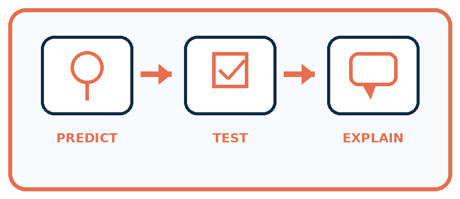
1. Predict
State your prediction before the result is known.
2. Investigate
Complete the task: Find three boundary cases and design a 'need more info' output.
3. Compare cases
Keep a normal case and an edge case clearly separated.
4. Record honestly
Record what happened—even when it does not match your prediction.
5. Explain and plan the next test
Explain the result, one limitation, and the next useful test.
| Case | Prediction | Observed result | What it means |
|---|---|---|---|
| Normal | |||
| Edge |
Use a fresh case after support
INDEPENDENCE After support is removed, repeat the proof with a fresh case.
Plan → try → check
Before trying: what do I expect, and why? While trying: which step could first go wrong? Afterwards: what did I actually observe, and what should change? Keep “not run” if you only traced the procedure.
Student lesson · 10 of 18
Build your understanding
Move from recall to tracing, diagnosis and transfer in Boundaries and 'Not Sure'. Explain why each step is justified.
PRACTICE LADDER
Climb from Recall to Defense
Each step asks for a stronger kind of understanding.
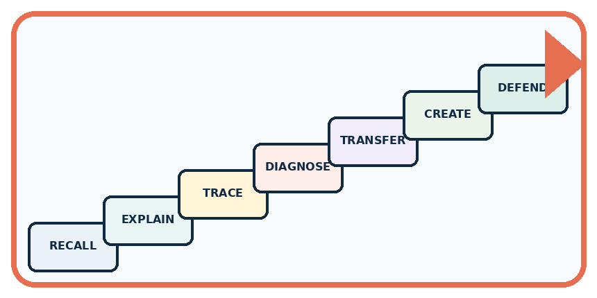
RECALL Define boundary case.
EXPLAIN Overlapping categories create uncertainty; abstaining can be responsible.
TRACE Show the input, process, and output.
DIAGNOSE Repair: A good system must always choose one label.
TRANSFER Apply the idea to a new home or classroom case.
CREATE Design one revealing test.
DEFEND Give a claim, evidence, mechanism, limit, and safe action.
When to retry
RETRY RULE A coached answer becomes mastery only after you solve a different case independently.
Student lesson · 11 of 18
Connect your project
Apply this week’s idea to Helpful Classroom Sorter. Keep an annotated decision and the evidence supporting it.
PROJECT
Helpful Classroom Sorter
Build one coherent system across the year, one evidence-based decision at a time.
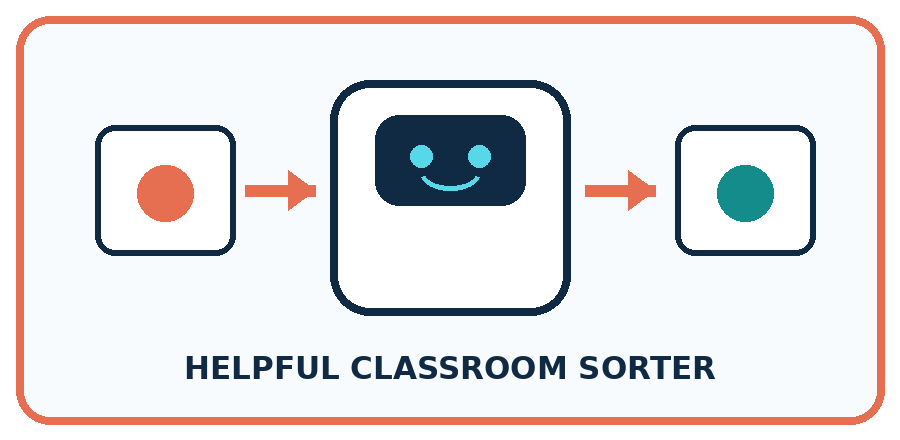
THIS WEEK'S CHECKPOINT Add a not-sure branch, missing-information prompt, and human review destination to the sorter.
What real classroom need does this serve?
What information is necessary—and what should stay private?
What happens inside the process?
What normal and edge cases will you test?
When should it say not sure or ask a person?
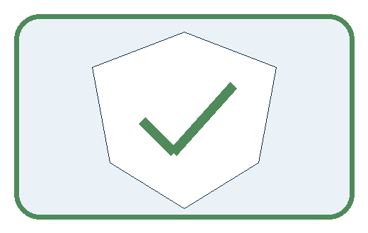
Responsible design
RESPONSIBLE DESIGN Responsible uncertainty is informative and actionable, not a blank refusal.
My project decision:
Evidence for your project
Add explicit review paths to the sorter, including unresolved input, responsible person and evidence needed.
Student lesson · 12 of 18
Show what you know
Use a genuinely new case for independent evidence. Previously discussed examples remain practice; use the separately named independent case before feedback.
MASTERY
Fresh-Case Independent Proof
Complete this after teaching and guided practice have ended.
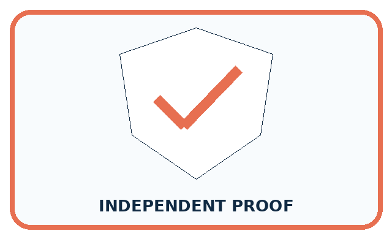
What success looks like
REQUIRED PROOF Find three boundary cases and design a not-sure output that names the missing clue and next action.
□ Name or draw the fresh case.
□ Trace input, process, and output.
□ State the conclusion and strongest evidence.
□ Name one limit, failure, missing clue, or fairness/privacy concern.
□ Explain one safe next action or improvement.
Independent evidence:
Check your explanation
SELF-CHECK A useful not-sure result is specific: it states which categories compete, what evidence is missing, and who or what should supply it.
Abstention reduces forced errors but should not become an excuse to avoid all decisions.
My level: □ Not yet □ With one hint □ Independently □ I can teach it
Connect to the next lesson
NEXT BRIDGE Carry today's evidence habit into: Prediction Is Not Fact.
Student lesson · 13 of 18
Study a complete case
Revisit the complete Boundaries and 'Not Sure' case for supported practice. Repeated examples do not become fresh assessments.
Week 16 Worked case
Use the supplied details to practise the weekly concept before attempting the independent question. This case extends the illustrated lesson.
The situation
A sorter handles clearly red and clearly blue cards. Purple and very dark cards arrive.
The question
How should it handle each uncertain case?
Worked explanation
Use a review tray. Purple is outside the clear categories; darkness prevents observation. These are different uncertainty causes.
Explain it in your own words
Which detail supports the answer, and why does it matter?
Trace the supplied case visually
Two different reasons to ask for help
| Evidence or stage | Value or result |
|---|---|
| Purple card | Outside clear red/blue categories |
| Very dark card | Colour cannot be observed |
| Review tray | Preserve uncertainty for a person |
A sorter handles clearly red and clearly blue cards. Purple and very dark cards arrive.
How should it handle each uncertain case?
Use a review tray. Purple is outside the clear categories; darkness prevents observation. These are different uncertainty causes.
Student lesson · 14 of 18
Try a new case independently
Attempt the reserved new case before feedback. Record support; the earlier examples below remain additional practice.
Independent case: Transfer the method to distance
A paper model predicts far at a distance of at least 4 units, otherwise near, for whole-number distances 1 through 8. For each complete possibility set, compare predictions: 2 or 3; 3 or 4; 4 or 5.
Identify the set requiring review before a single category can be stated. Design a relevant check and an unresolved ending. Limit the claims for the other two sets.
Attempt this case before feedback. Record any help. Earlier examples below are further practice; a case already practised with feedback cannot establish fresh transfer.
Week 16 Independent application
Close the worked explanation. Apply the idea to this different question without copying.
A sorter knows pencils and books. You show a lunch box. Should it force a known label or ask for help? State a useful fallback.
My answer, with a trace, calculation or supporting evidence
Create and test
Change one relevant detail. Predict the result before testing. Include a boundary or missing-information case when it helps reveal a limit.
My changed input and expected result
Connect to your project
Add a not-sure branch, missing-information prompt, and human review destination to the sorter.
The evidence I will keep
Your teacher has the independent answer and scoring criteria. Complete the matching workbook week to keep your practice evidence together.
Transfer practice from the original programme
A sorter receives a clear purple card, a red card hidden by a sleeve and a card labelled both red and blue by two reviewers. Give a different reason for uncertainty in each case and a suitable next action.
Use feedback to improve
Attempt the independent case before hints. Record whether you worked alone, used a hint or followed a model. After feedback, fix the first unsupported step and explain why it changed.
A later check uses a changed case, not a copied answer.
Student lesson · 15 of 18
Your lesson route
Use this map to navigate Boundaries and 'Not Sure', connect the goals to tasks and keep one evidence record for each attempt.
Start with this question: A fictional cubby selector accepts a block if width is at most 5 cm.
| By the end, I can | How I will show it |
|---|---|
| Identify a specific source of uncertainty and explain how it affects a prediction | Explain the deciding step, show a trace or test, and state one limit. |
| Compare predictions across stated possible inputs without inventing a missing value | Explain the deciding step, show a trace or test, and state one limit. |
| Design a review step with relevant evidence and an explicit unresolved outcome | Explain the deciding step, show a trace or test, and state one limit. |
Remember → watch and explain → try with help → investigate → try independently → keep project evidence. Your teacher may spread this lesson across several classes.
Keep your first prediction. Compare it with what the evidence shows and explain any change.
Student lesson · 16 of 18
Finish and return
Explain Boundaries and 'Not Sure' without notes, identify a remaining question and plan a later check with a changed case.
Close your notes. Explain this goal in your own words: Identify a specific source of uncertainty and explain how it affects a prediction
If you are unsure, return to the worked picture and explain one arrow. If you are ready, change an input or assumption and justify your prediction.
Save your workbook evidence. At the next review, try a different case before opening your old answer.
Student lesson · 17 of 18
Supported practice, repair and portfolio
Attempt supported questions before using hints or feedback. Review a missing building block, then keep the completed work.
Use this supported practice once, in the browser or on paper. Keep the reserved independent assessment for a separate first attempt before teacher feedback.
A fictional cubby selector accepts a block if width is at most 5 cm.
Practice 1: explain the deciding evidence
Which labelled step matches this detail? Ask a named reviewer to remeasure B using the specified width unit.
1. Block B possibilities
2. Compare decisions
3. Block A possibilities
4. Review B
Hint · try first
Hint if needed: Read the steps in the pictorial case. Match the supplied detail to the stage that performs or records it.
Feedback · compare after trying
After your attempt, compare with the supported explanation: Review B Ask a named reviewer to remeasure B using the specified width unit. Uncertainty about a number need not always create uncertainty about the decision.
Every allowed width for A fits, so its width uncertainty does not affect acceptance. B straddles the boundary.
Record both possibilities and request a better measurement instead of selecting the one that makes a preferred outcome.
Practice 2: explain the deciding evidence
Changed case · predict first
Changed-case practice: Narrow B’s possibilities to 6 or 7 cm. Which conclusion is supported by the supplied facts?
1. Both fail the width limit; rejection no longer depends on resolving their difference.
2. We can decide the result without examining the changed input or the procedure.
3. This one example guarantees correct results for every future input.
Hint · try first
Hint if needed: Use the changed condition and the deciding step in the pictorial trace. The answer must say what follows from those facts.
Feedback · compare after trying
After your attempt, compare with the supported explanation: Both fail the width limit; rejection no longer depends on resolving their difference. All remaining possibilities lead to the same decision.
Repair a missing building block
Review Save New Examples for Testing (ai-1/15). Goal: Separate examples used to choose a model from examples reserved for its final evaluation. Short practice: Does 4/4 on the replay replace the original 3/4 result? Explain..
Return to this week and explain what you changed.
Review Learning from Examples (ai-1/13). Goal: Fit a threshold by tracing predictions and counting disagreements for every candidate. Short practice: Which new measured length would reveal disagreement between the candidates?.
Return to this week and explain what you changed.
Review If/Then Decisions (ai-1/10). Goal: Evaluate a condition using the current state and trace only the selected branch. Short practice: Which input detects the difference between the two written conditions?
Explain its entire run.. Return to this week and explain what you changed.
Keep your completed work
Use Download completed work in the hosted lesson to export your answers, reflections, practice feedback and code-run evidence. Open the HTML copy to read or print it.
Drafts stay in this browser when storage is available; clear drafts on a shared device.
Student lesson · 18 of 18
Visual concept journey
Explain each Boundaries and 'Not Sure' graphic using its labels, deciding evidence and relevant limitation.
01. Boundaries and 'Not Sure': the case
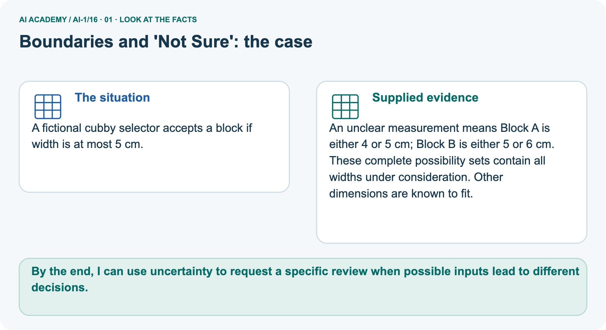
A fictional cubby selector accepts a block if width is at most 5 cm. Supplied facts: An unclear measurement means Block A is either 4 or 5 cm; Block B is either 5 or 6 cm.
These complete possibility sets contain all widths under consideration. Other dimensions are known to fit.
Point to the given fact that matters most. Explain why it matters.
02. Follow the deciding steps
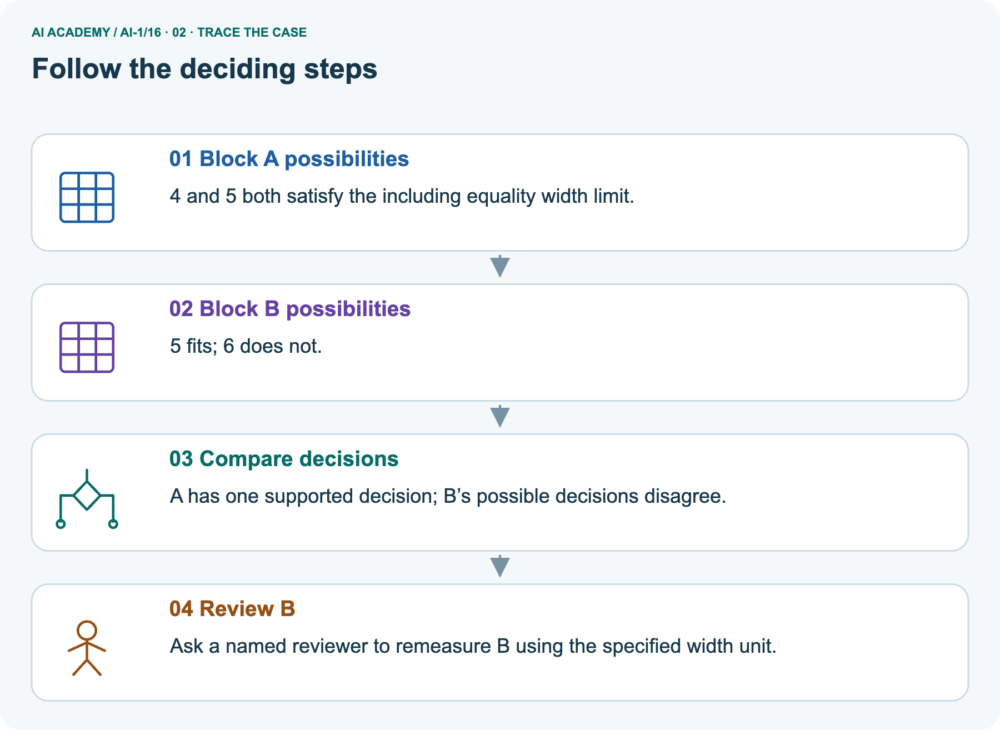
Block A possibilities: 4 and 5 both satisfy the width limit, which includes equality. → Block B possibilities: 5 fits; 6 does not. → Compare decisions: A has one supported decision; B’s possible decisions disagree. → Review B: Ask a named reviewer to remeasure B using the specified width unit.
Point to each numbered stage and explain which recorded input it uses.
03. Possibilities and decisions
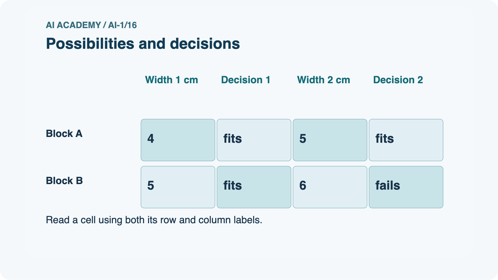
Possibilities and decisions. Block A: Width 1 cm = 4, Decision 1 = fits, Width 2 cm = 5, Decision 2 = fits. Block B: Width 1 cm = 5, Decision 1 = fits, Width 2 cm = 6, Decision 2 = fails.
Read the labels and values. Explain the relationship the model shows.
04. Change one thing. Trace what follows.
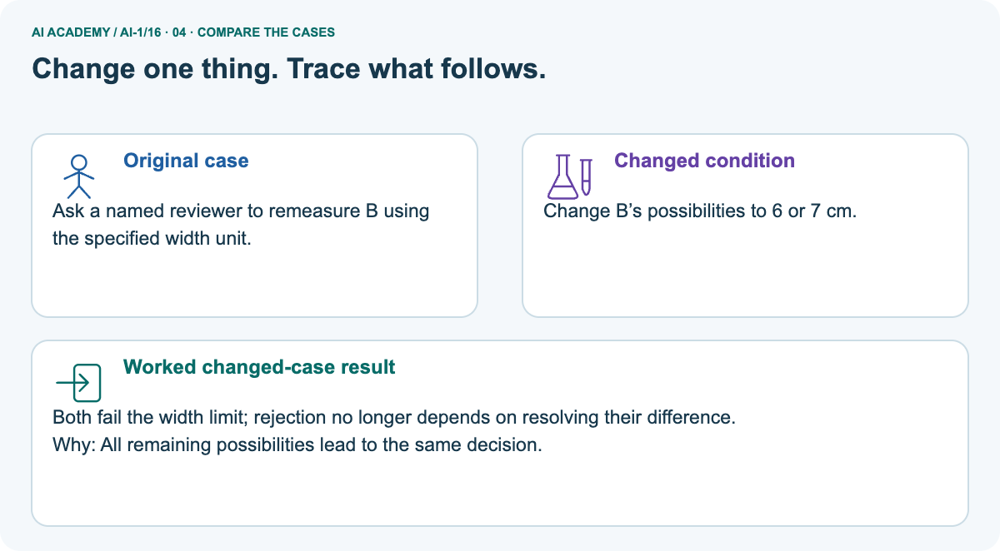
Original case: Ask a named reviewer to remeasure B using the specified width unit. Changed condition: Narrow B’s possibilities to 6 or 7 cm.
Expected result: Both fail the width limit; rejection no longer depends on resolving their difference. Reason: All remaining possibilities lead to the same decision.
Predict before checking the worked changed-case result. Name what changed and what the supplied facts allow you to conclude.
05. Connect the explanation to its limit
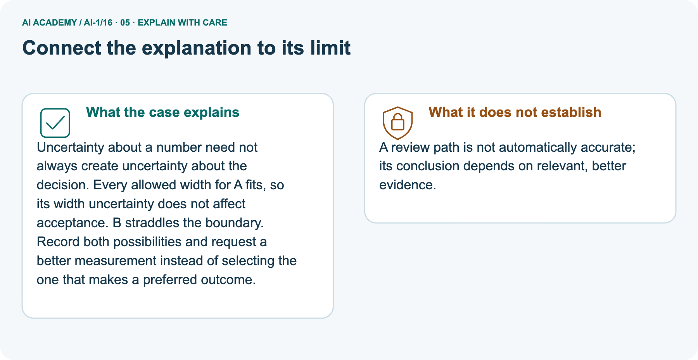
Uncertainty about a number need not always create uncertainty about the decision. Every allowed width for A fits, so its width uncertainty does not affect acceptance. B straddles the boundary.
Record both possibilities and request a better measurement instead of selecting the one that makes a preferred outcome. Limit: A review path is not automatically accurate; its conclusion depends on relevant, better evidence.
Explain the case, then point to a limit on the claim.
06. Make the idea visible in your project
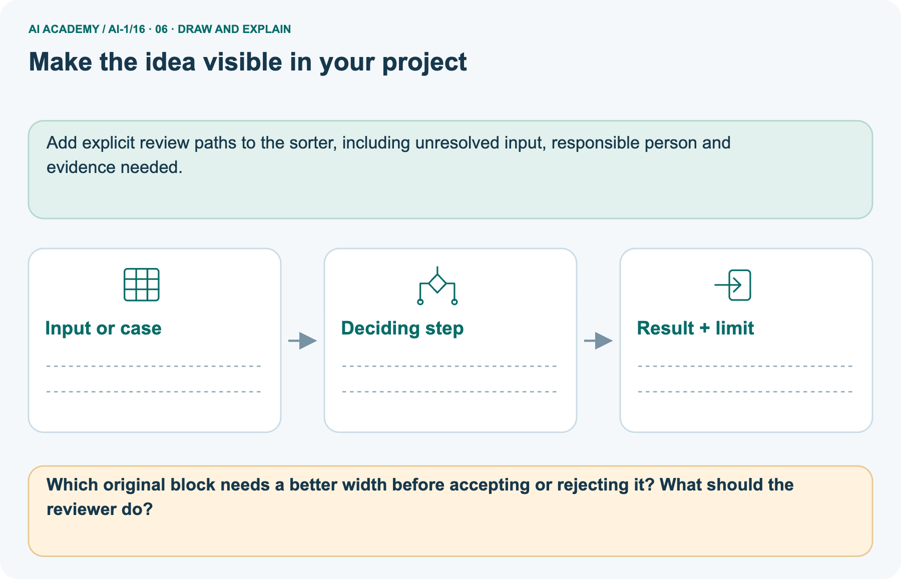
Add explicit review paths to the sorter, including unresolved input, responsible person and evidence needed. Draw your input, deciding step, result and limit.
Supported question: Which original block needs a better width before accepting or rejecting it? What should the reviewer do?
Draw your project trace and justify the deciding step using evidence.